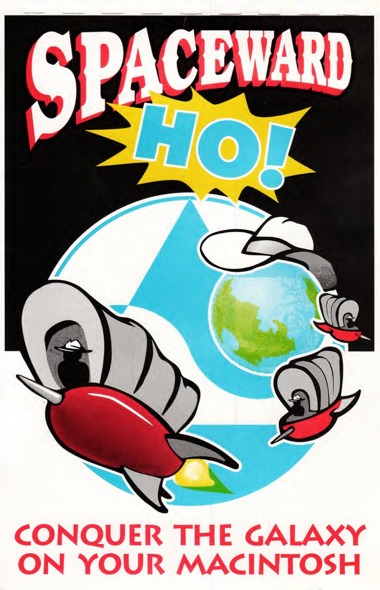

Spaceward Ho! 3.0.1 Kılavuzu (Macintosh)

Spaceward Ho! 3.0
Yazan: Peter Commons
Grafikler: Howard Vives ve Bob van de Walle
Sesler: Mark Madeley
Tasarım: Joe Williams ve Peter Commons
Kılavuz ve yazılım © Telif Hakkı 1991-1993
Delta Tao Software, Inc.
Bütün hakları saklıdır
- Ho! İçin Süper Hızlı Talimatlar (s. 1)
- Sözlük (s. 2)
- Kısa Bir Özet (s. 4)
- Daha Ayrıntılı Bilgiler (s. 5)
- Ekonomi (s. 13)
- Gemiler (s. 16)
- Gezegenleri Keşfetmek: Sıcaklık ve Yerçekimi (s. 21)
- Teknolojiyi Geliştirmek (s. 28)
- Mesaj Göndermek (s. 31)
- İttifaklar (s. 32)
- Savaşları Gözden Geçirmek (s. 33)
- Oyuncuları Karşılaştırmak (s. 34)
- Birden Çok Oyuncu (s. 35)
- Özel Galaksiler (s. 37)
- Bilgisayar Oyuncuları (s. 38)
- Seçenekler Menüsü (s. 39)
- Tercihler (s. 41)
- Kısayollar (s. 43)
- System 7 (s. 45)
- Kopya Korumasına Karşı Tutumumuz (s. 46)
- Delta Tao Hakkında (s. 48)
- Ambalaj Hakkında (s. 51)
- Spaceward Ho! Hakkında (s. 52)
- Gelecekteki Yönelimler (s. 53)
- Uzay Programı Hakkında (s. 54)
- Sık Karşılaşılan Sorunlar (s. 55)
- Sürüm 1’den 2’ye Değişiklikler (s. 57)
- Sürüm 2’den 3’e Değişiklikler (s. 58)
- Önerilen Kitaplar (s. 59)
- Delta Tao’nun Sevdiği Oyunlar (s. 60)
- İnce Yazılar (s. 61)
- Teknik Destek (s. 62)
- Ekler
Delta Tao kılavuzunun yeniden yapım tarafından yapılmış, resmî olmayan Türkçe çevirisi. İngilizce sayfa.